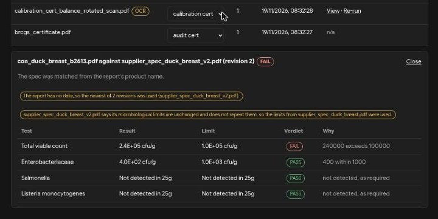
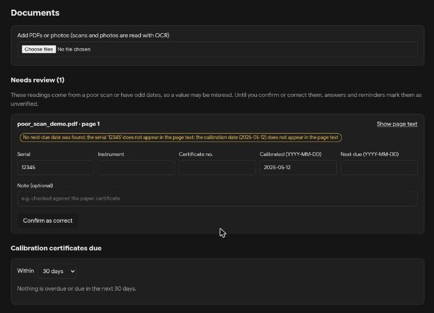
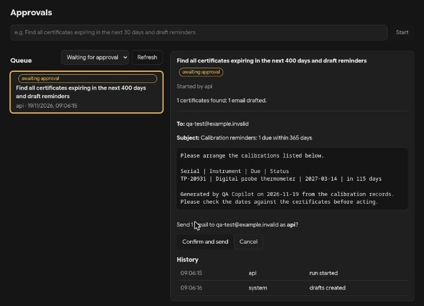

Gressingham Foods — GenAI · Nov 2026
KVACK — an AI assistant for food quality documents
A food quality team lives in paperwork: product specifications, calibration certificates, lab reports and SOPs. Finding one date or one limit can mean opening a dozen PDFs. KVACK (Knowledge, Verification & Automation Compliance Kit) reads them all, answers questions with the exact page as its source, and drafts reminders that only a person can send.
One rule shaped the whole design: the AI reads and writes language, but code makes the decisions. In compliance work, a confident wrong answer is worse than no answer.
All screenshots use made-up sample documents. The app was renamed from "QA Copilot", which still shows in the header.
Ask a question, get the source
Questions are answered from the documents with numbered citations that open the page they came from. If the documents don't cover something, it says so instead of guessing. Due-date questions skip the AI entirely: they're answered straight from the database, listing every matching instrument and naming superseded certificates, so an old certificate can never win.

Checking a lab report against its spec
The model pulls results and limits out of each document, then plain code compares them: it understands values like "<10" and "2.2E+03", picks the spec revision in force on the report date, and marks anything unclear as "review" rather than guessing pass or fail.

Poor scans go to a person
OCR on a bad scan can misread digits, and a model can invent a serial number from garbled text. So every serial and date must actually appear on the page; anything that doesn't, or comes from a poor scan, waits in a review queue. Until someone confirms it, answers and emails mark it as unverified.

Nothing is sent without approval
"Find certificates expiring in the next 30 days and draft reminders" starts a LangGraph agent. Code gathers every fact; the model only writes a short intro. The run then pauses until a named person approves it with two clicks. Paused runs are saved in Postgres, so they survive a restart, and every email is sent exactly once even if someone clicks twice.

How it's built
- Back end: Python library behind an async FastAPI service, with the AI model swappable through config. It runs on site with a local model.
- Search: hybrid retrieval (meaning + keywords) over Qdrant, re-ranked by a cross-encoder.
- Agent: LangGraph with a mandatory human-approval step and an audit log that can't be edited.
- Front end: React 19 and TypeScript, with a client generated from the API's OpenAPI schema.
- Quality: a 43-question test set, extraction accuracy checks and AI-judged faithfulness. GitHub Actions fails the build if recorded scores drop.
- Monitoring: Langfuse traces every model call and links user feedback to it; Prometheus and Grafana track speed, errors and queues, with alerts.
What I learned
- Measure before trusting. The test set caught the assistant confidently citing an out-of-date certificate, which led to answering due dates from the database instead.
- Fail visibly. When splitting a 29-certificate PDF, it's better to over-split and show "could not read one" than to merge two certificates and lose one silently.
- Speed is a design choice. Switching model settings and adding a text fallback took that 29-certificate bundle from over an hour to about 40 seconds.
The same pattern fits any document-heavy operation: messy files in, structured data and cited answers out, and a person accountable for every decision.